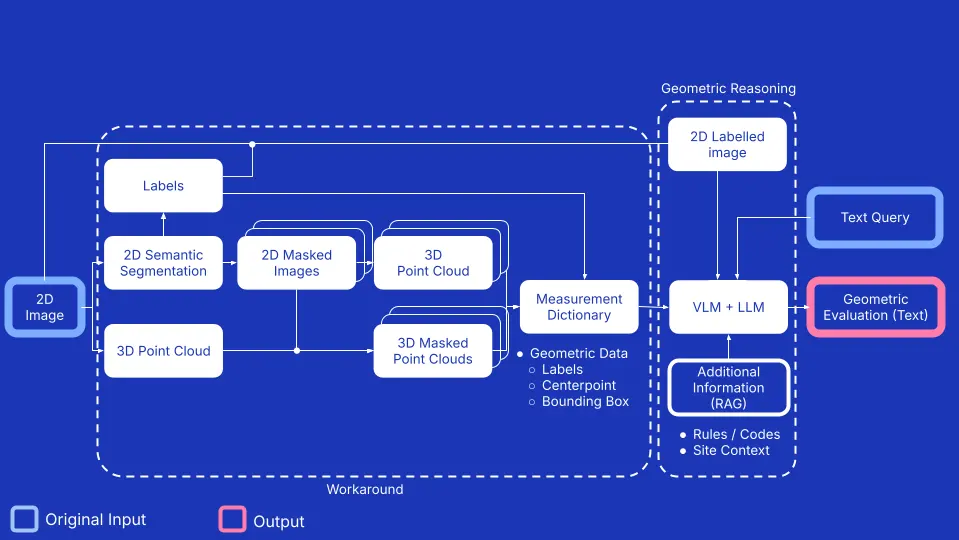
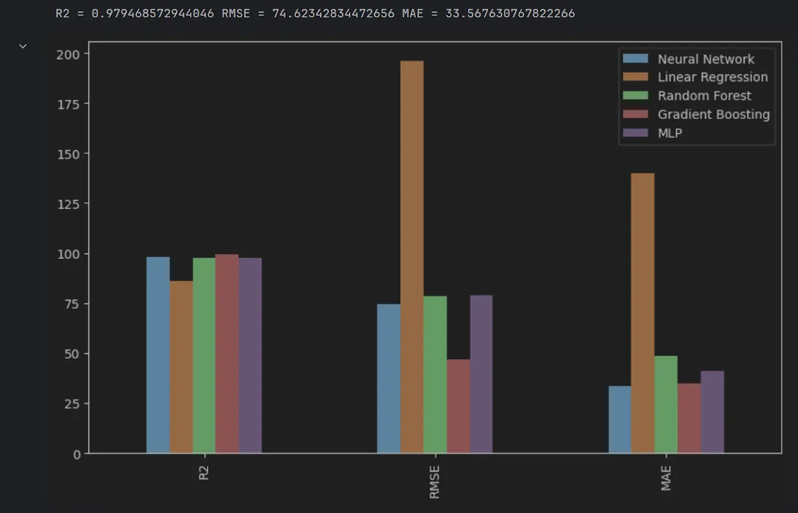
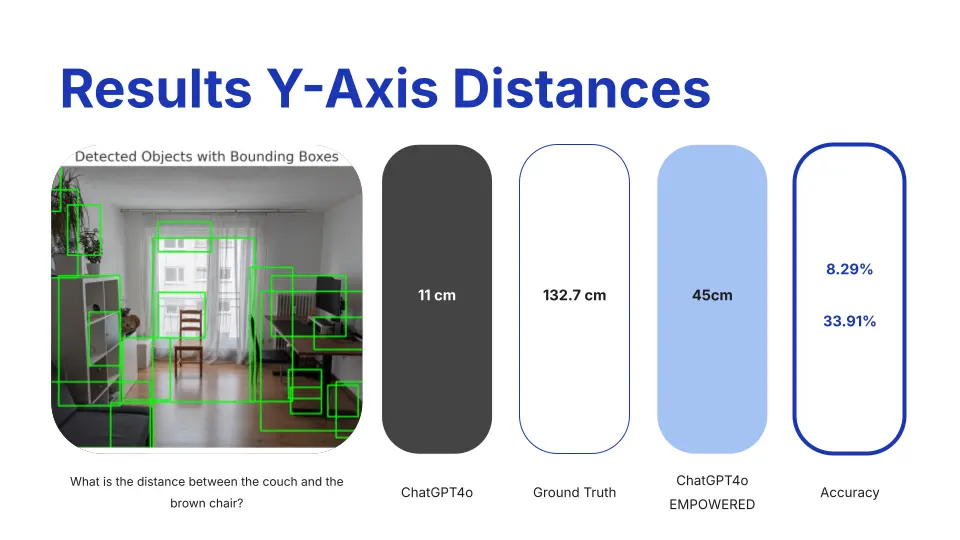

research
Empowering VLMs with 3D Spatial Insight

- context
- ITECH
- year
- 2025
- type
- research
The aim of this project is to improve the spatial understanding capabilities of Visual Language Models (VLMs) when processing 2D images by providing additional geometric information derived from segmented point-cloud data. To enhance the spatial understanding of a Visual Language Model we developed a workflow that combines multiple existing models in the areas of depth image generation, Natural Language processing and 3D semantic segmentation to improve geometric understanding of objects in a space. The workflow begins by generating a depth map from a 2D image, which is then used to create a 3D point cloud that is subsequently segmented and labeled. This segmented point cloud, along with additional geometric data such as bounding boxes and center points of the segments, is fed into the visual language model. The inclusion of geometric data enhances the language model’s spatial understanding, enabling it to provide more accurate and context-specific responses when queried about the 3D scene. Including Retrieval Augmented Generation (RAG) as additional input to the VLM, tailored to the architectural task can provide the model with more, in depth understanding of the relationship of the measurements and their significance for the task. However, due to a number of problems like the need to switch between different operating systems, computing power and time, it wasn’t possible to get this workflow running. Therefore a workaround was developed, where instead of the 3D Segmentation model, a combination of different substitution steps is implemented. This method is explained in more detail in the following.
To test the efficiency of our method, the initial sample photo was tested again with ChatGPT. This time, the additional information of the Measurement Dictionary and the background knowledge from the RAG were added. Initial results showed that the model was much more successful in the X axis than it was in the Y axis when the 3D point cloud was compared with the measured floor plan, with 97% accuracy in the X axis and only 34% in the Y axis. This can be also observed by overlaying the point clouds with the ground truth floorplan of the scene (figure x). However, after further exploration, it was found that images taken at more chest level (middle level) showed these accuracies while pictures taken from higher up (eye level) showed better accuracy in the Y axis. An interesting observation was that online ChatGPT tried to establish the spatial relationship with the help of segmentation and bounding boxes (figure x), but the results were completely wrong.
Refining the text prompt and asking about changes, the VLM could also give some quantitative answers on how to move furniture to achieve, in this example, wheelchair accessibility. Testing the workflow on the programmed Multi-Agent System was not successful and did not give qualitative good answers to the question. It was able to provide good information about the wheelchair accessibility but did not process the raw values of the dictionary correctly.





